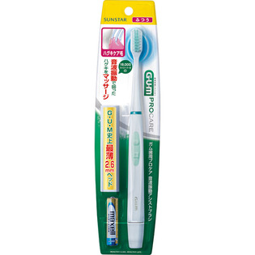

返回列表
产品名称：ガム 歯周プロケア 音波振動アシストブラシ ＧＳ－０３

サンスター ガム 歯周プロケア 音波振動アシストブラシ ＧＳ－０３ ふつう
メーカー サンスター
JANコード 4901616216556
商品の特徴
手磨きでは難しい小刻みなブラッシングを１８０００ストローク／分の音波振動でアシストして血流の弱ったハグキをやさしくケアします。
成分・分量
【素材】
本体：ＡＢＳ
用法及び用量
【使用方法】
ハミガキを適量毛先に付け、ブラッシングを行ってください。